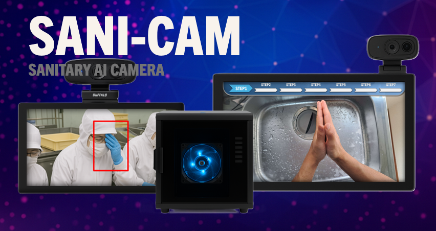
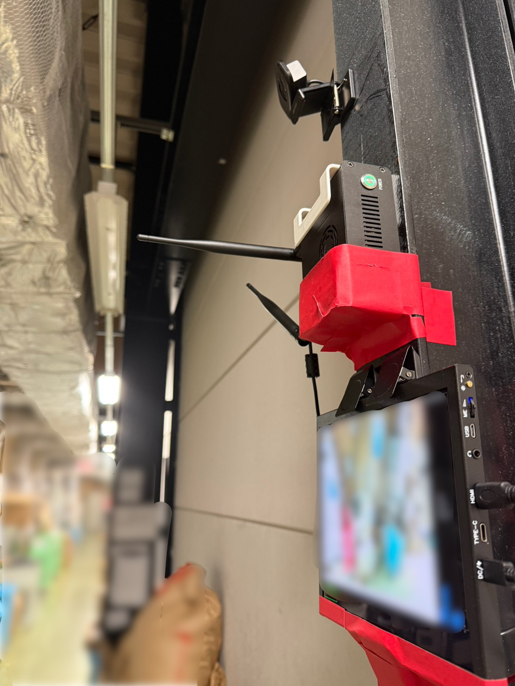

製造・食品・医療・物流——業種を問わず共通する現場の課題です。
こんな現場でご活用いただいています
骨格AI・物体検知・行動解析が、3つの領域の課題を同時に解決します。
 🔵 安全管理
🔵 安全管理

🟢 衛生管理
🟡 品質・5S管理| 管理項目 | 導入前 | nanoGUARD導入後 |
|---|---|---|
| 転倒・体調不良の発見 | 巡回か本人からの連絡待ち | 骨格AIがリアルタイムに検知し即アラーム |
| 手洗い・衛生手順 | 自己申告・目視のみ、抜け漏れあり | AI が動作・滞在時間で自動判定し記録 |
| 顔への接触リスク | 把握不能。注意しても繰り返す | リアルタイム検知＋ログで行動改善を促進 |
| 5S 定位置管理 | 人が巡回しないと気づかない | 基準映像との差分をAIが自動検出・通知 |
| ISO・HACCP 記録 | 手作業で作成、監査前に書類集め | 日々の運用が自動的に監査証跡を生成 |
| 不適合の原因調査 | 記憶・目撃情報に依存 | 映像＋骨格ログで即座に遡及調査が可能 |
衛生管理・入退室セキュリティ・野生動物対策——現場の課題に合わせてお選びください。複数の組み合わせも可能です。
夜間・一人作業中の転倒を骨格AIが即時検知。重篤化を防ぎます。
手洗い・保護具着用・顔触り行動をAIが常時確認。コンタミリスクを客観証明。
基準状態との差分を自動検出。ISO 9001/45001の監査エビデンスを自動生成。

夜間・見守りが手薄な時間帯でも骨格AIが転倒を検知し即時アラーム。
WHO準拠の手洗いをAIが採点・記録。感染対策監査の証拠データを自動管理。
手術室・無菌室への不正侵入を24時間検知。アラートログが監査証跡に。

手洗いをAIが自動確認・記録。HACCPの証跡を自動化します。
無意識な顔触り行動を個人単位でログ化。データに基づく衛生改善を実現。
定位置管理・清掃実施をAIが自動確認。HACCP記録を一元的に自動生成。
安全確認・衛生チェック・5S実施のすべてをタイムスタンプ付きで自動記録。
不適合発生時は映像・骨格データで即座に遡及調査。内部監査のログ・映像はWebUIからCSVで即エクスポートできます。
どの製品が現場に合うかわからない場合もお気軽にご相談ください。
用途・環境をお聞きして最適な構成をご提案します。